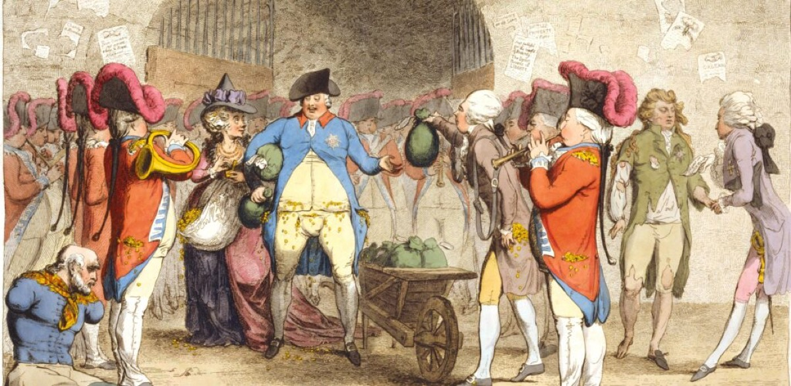

Borçlanmanın Mantığı ve Osmanlı Borçlanması I
Tasavvurumdaki yazı serisinin ilk bölümünde basitçe devlet borçlanmasının eşit olmayan taraflar arasındaki bir sözleşme olduğunu iddia edeceğim. İlk bakışta devletin kendisine borç veren bankalar ya da sermayedarların…

Tasavvurumdaki yazı serisinin ilk bölümünde basitçe devlet borçlanmasının eşit olmayan taraflar arasındaki bir sözleşme olduğunu iddia edeceğim. İlk bakışta devletin kendisine borç veren bankalar ya da sermayedarların karşısında daha üstün bir konumda olması beklenir. Zira devleti basitçe egemenliği kullanan en üstün iktidardır diye tanımlayabiliriz. Peki, bir devlet sermaye karşısında kendi egemenliğini koruyamazsa neler yaşanabilir?
2009’da Yunanistan’da patlak veren borç krizi ve sonrasında yaşananlar, bu soruya verilebilecek en yeni cevaptır. Ama ben sizi daha geçmişe, XIX. yüzyıla götürmek istiyorum. Osmanlı borçlarının tarihsel seyrine geçmeden önceyse paranın ve borcun insan psikolojisi ve toplum örgütlenmesini nasıl etkilediğini irdelemek gerektiğini düşünüyorum.
Parayı gündelik yaşamımızda sembolik anlamını düşünmeden kullanırız. Sıradan insan için para en temelde alışverişi olanaklı kılan ve sahip olduğu veya sahip olamadığı serveti sayısal olarak ölçmeye yarayan bir nesnedir. Fakat paranın insanlar ve toplumlar üzerindeki psikolojik/sosyolojik gücünün çok daha güçlü olduğu söylenebilir. Para aynı zamanda bir devletin egemenlik alametlerinden biridir. Aynı zamanda dünyanın tarih içerisinde rezerv para olarak kullandığı birimler, ait oldukları devletlerin siyasî ve iktisadî gücünü gösteren birer simgedir. XIX. yüzyılın son çeyreğindeki Britanya’yı sterlinden veya II. Dünya Savaşı’nın muzaffer ABD’sini dolardan bağımsız düşünmek mümkün müdür? Para son beş bin yılın en baştan çıkarıcı ve kalıcı fikirlerinden biri olarak günümüzde örgütlü toplumlarından temel taşlarından birini teşkil eder.[1]
Para çerçevesinde şekillenen borç kavramını da geniş bir şekilde ele almak gerekli. Gündelik hayatımızdaki borçlarımız nasıl bizim düşüncelerimizi, davranış kalıplarımızı ve tüketim alışkanlıklarımızı etkiliyorsa makro düzeyde devlet borçları ve borçlanma süreçleri de uluslararası ilişkileri ve ülkesel karar alma mekanizmalarını etkilemektedir.
Günümüzde borcu olmayan bir vatandaşa denk gelmek mümkün değildir. Kredi kartı borcuyla cebelleşen bir yurttaş olduğumuzu farz edelim. Gelirimiz ve giderimiz arasındaki makas açıldıkça borç miktarı artmaya devam edecektir. Bu durumda ya yaşam masraflarımızı kısmamız icap eder ya da gelecekteki gelirimizin bir kısmından vazgeçerek güncel borcumuzu ödemeye çalışırız. İkinci yöntemin seçilmesi durumunda yeni bir maddi kaynak yaratmak gerekecektir. Bu borçlanmada ise eşitler arası bir sözleşme değil; önümüze konan ve yerine göre sahip olduğumuz varlıkların ipotek altına alındığı bir sözleşme akdedilmektedir. Kredinin sağlanması için bu numune sözleşmenin imzalanması ise bir önkoşuldur.
Devlet borçlarını da çok basit bir şekilde bireysel borçlanmaya benzetebiliriz. Her ikisinde de bir bağımlılık ilişkisi, ast-üst hiyerarşisi, harcamaya yönelik bazı kısıtlamaların devreye girmesi ve gerektiğinde verilen başka tavizlerden bahsetmek mümkündür. Ama dış borçlanma, devlet denilen sosyal olgunun ve uluslararası ilişkilerin doğası gereği çok daha karmaşıktır.
XIX. yüzyıldaki devlet borçlanmalarını düşündüğümüz vakit bu denkleme o döneme özgü başka unsurların da eklenmesi gerekir. Gambot diplomasisi, çevre/yarı-çevre ülkeler üzerinde tahakküm kurma girişimleri, serbest ticaret emperyalizmi, gayri-resmî emperyalizm yöntemleri, askerî kuvvet kullanımı, sömürgecilik ve nihaî olarak işgal gibi müdahale yöntemleri XIX. yüzyılın devletlerarası ilişkilerine oldukça hakimdir.
Bağımsız bir devletin kendi ülkesel sınırları içerisinde egemenliği elinde tutan en üstün iktidar odağı olduğu kabul edilir. Uluslararası sahada da bağımsız devletlerin egemenlik yönünden eşit oldukları varsayımı mevcuttur. Fakat yukarıda dile getirdiğim müdahale yöntemlerini XIX. yüzyıl boyunca kullanmaktan çekinmeyen İngiltere ve Fransa gibi ülkelerle Mısır, Sırbistan, Osmanlı İmparatorluğu ve Yunanistan gibi temerrüde düşmüş devletleri aynı kefeye koymak mümkün müdür? Bu soruya yanıt için eşitlik kavramının genel tanımı olan; iki veya daha fazla varlığın belirli nitelikler bakımından karşılaştırılması üzerinden ilerlenmesi gerektiğini düşünmekteyim.[2]
Bağımsız olduğunu varsaydığımız devletleri bir tarafa koyarsak zengin ülkelerdeki kreditör bankalar ile sermaye sahiplerinin bir araya gelerek kurdukları idarelerin bile denk olduğunu iddia etmek abesle iştigaldir. Mesela 1895’e gelindiği vakit, dış borçlarını ödeyemeyen Sırbistan ile Berliner Handels-Gesellschaft, Osmanlı Bankası ve Viennese Länderbank arasında Carlsbad Anlaşması imzalanmıştır. Carslbad Anlaşması ile Sırbistan’a ait bazı gelirleri toplayacak ve dış borçların ödenmesine aktaracak bir Tekel İdaresi kurulmuştur. Yani Sırp devletinin egemenlik yetkilerine el konmuş ve bazı yöneticileri tahvil sahipleri tarafından atanan bir özerk yapı kurulmuştur.[3] Berliner Handels-Gesellschaft, Osmanlı Bankası ve Viennese Länderbank gibi bankalar Sırp tahvillerinin sadece yedide birine sahiptir. Sırbistan’ın egemenlik yetkilerine el koyan bankalar aynı zamanda diğer tahvil sahiplerinin de haklarını gasp etmiştir.
Peki, bu kuruluşlar neden borç verirler? Bu sorunun cevabı çok basittir: komisyon masrafları ve faiz oranı. Faiz oranı sadece bir fiyat değildir; aynı zamanda bir koddur, borç verilen kişi/devlet, başarı şansı, bölgedeki risk, piyasadaki rekabet, teknolojik altyapı ve bir dizi başka değişken hakkında bilgi içeren mini bir ansiklopedidir.[4] Temerrüde düşme ihtimali oldukça kuvvetli olan ülkelere borç veren özel bankalar veya sermaye kuruluşları tarih boyunca çok yüksek faiz oranları talep etmişlerdir. Çünkü borcun geri ödenme ihtimali ödenmeme ya da tam olarak ödenme ihtimalinden daha düşüktür. Buna rağmen borç verilmesinin temel sebebi ise o borcun bir kısmı bile ödenecek olsa borç veren kuruluşun yüksek kâr elde edebilecek oranlar ve faiz hesaplama yöntemleri belirlemesidir. Bir yerden sonra belirlenen bu faiz oran ve yöntemlerinin sonucunda aracı kuruluşların hiyerarşik ilişkiyi korumak ve kar elde etmek için yeni borç vermesine bile gerek kalmaz. Sermayeye susayan devletler sonsuz bir borç döngüsünün içine alınır. Alacaklının daha fazla borç vermediği, buna rağmen borçlunun geri ödemeyi asla bırakamadığı bir zaman gelecektir.[5] Peki bu süreç Osmanlı İmparatorluğu için nasıl işlemiştir? Yazı serisinin ikinci bölümünde de bu soruya yanıt arayacağım.
[1] David McWilliams, Para: Bir İnsanlık Tarihi (Murtaza Özeren çev.), KTB Yayınları, İstanbul, 2025, s. 25.
[2] U. K. Preuß, (2011). Devletlerin Eşitliği ve Anayasal Bir Küresel Düzende Anlamı (A. Atılgan, Çev.). Hacettepe Hukuk Fakültesi Dergisi, 1(1). 133.
[3] Dragana Gnjatović, Foreign Long Term Government Loans of Serbia 1862-1914, SEEMHN papers, National Bank of Serbia, 2009, s. 10,.
[4] McWilliams, a.g.k, s. 41.
[5] Gilles Deleuze, Felix Guattari, Anti-Ödipus: Kapitalizm ve Şizofreni 1, Fahrettin Ege, Hakan Erdoğan, Mustafa Yiğitalp (çev), Bilim ve Sosyalizm Yayınları, Ankara, 2014, s. 289.